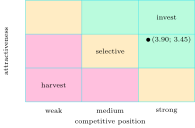

Definition
After segmenting, choose the target market where to concentrate effort. SWOT merges the external perspective (market features and trends) with the internal one (the firm):
| Context | Positive | Negative | Analysis |
|---|---|---|---|
| Internal (firm) | Strengths | Weaknesses | competitiveness |
| External (market) | Opportunities | Threats | attractiveness |
Brainstorming among managers and experts can fill it, but structured models avoid simplistic results.
Model
External analysis — attractiveness of segments
- Demand analysis: quantity bought by a group of customers in a segment in a period; life-cycle stage of segment demand.
- PEST / PESTLE: Political (tax regime, foreign trade, antitrust); Economic (inflation, interest and exchange rates); Social (education, rights, demography); Technological (public R&D, IP protection, digitalization); Legal (employment law, consumer protection and safety); Ecological (climate, location, environmental limits).
- Five forces (Porter), including competitive analysis.
Internal analysis — competitiveness
Value chain: look for cost and differentiation sources in each activity.
- Economic-financial aspects → cost advantage: financial statements, benchmarking of competitors, cash-flow forecasts; compete on cost at equal quality.
- Market position → differentiation advantage: absolute and relative market share; customers pay more for a different product.
If an activity's cost is above the competitors' average (plot activity cost vs competitor size), the firm has a cost disadvantage: a weakness in the SWOT.
GE-McKinsey matrix
Axes: segment attractiveness (high/medium/low) × competitive position (weak/medium/strong); nine cells, each with an optimal strategic behaviour; position computed as a weighted score of several factors.
| Attract. \ position | Weak | Medium | Strong |
|---|---|---|---|
| High | selectivity, | invest, grow | invest, grow |
| earnings | |||
| Medium | divest, harvest | selectivity, | invest, grow |
| earnings | |||
| Low | divest, harvest | divest, harvest | selectivity, |
| earnings |
(Reading: the axis "competitive strength" grows left to right; the three cells on the anti-diagonal are selective.) Compared with BCG, GE uses many weighted factors instead of one proxy per axis.
Worked example
Weighted attractiveness (weights sum to 1, scores 1–5):
| Factor | Weight | Score | Weighted |
|---|---|---|---|
| Market size | 0.20 | 4 | 0.80 |
| Growth rate | 0.20 | 5 | 1.00 |
| Historical margins | 0.15 | 4 | 0.60 |
| Competitive intensity | 0.15 | 2 | 0.30 |
| Technology requirements | 0.15 | 3 | 0.45 |
| Inflation vulnerability | 0.05 | 3 | 0.15 |
| Energy requirements | 0.05 | 2 | 0.10 |
| Environmental impact | 0.05 | 1 | 0.05 |
| Total | 1.00 | 3.45 |
Competitiveness with twelve factors (market share 0.10×4, share growth 0.15×4, product quality 0.10×4, brand reputation 0.10×5, distribution 0.05×4, promotion 0.05×5, capacity 0.05×3, production efficiency 0.05×2, unit costs 0.15×3, raw-material supply 0.05×5, R&D results 0.10×4, management 0.05×4) = 3.90. Mapping the 1–5 scale onto three bands (1–2.33 low, 2.33–3.67 medium, 3.67–5 high): attractiveness 3.45 → medium, competitiveness 3.90 → strong → cell "invest, grow".
SWOT — AirPods 2 launch: S = brand awareness, brand associated with high quality, capillary distribution, competent sales staff, excellent after-sales service; W = audio quality, advertising budget < 5% of revenue and below competitors', price above competitors; O/T from market trends and competitors.
Pitfall
Strengths/weaknesses are internal and relative to competitors; opportunities and threats are external and not controlled. A strength (brand) is not an opportunity.
Recall
Draw SWOT with its two analyses; list PESTLE; compute a weighted score; draw GE-McKinsey with its three zones.
Picture

Green cells: invest and grow; amber: selectivity; magenta: harvest or divest.